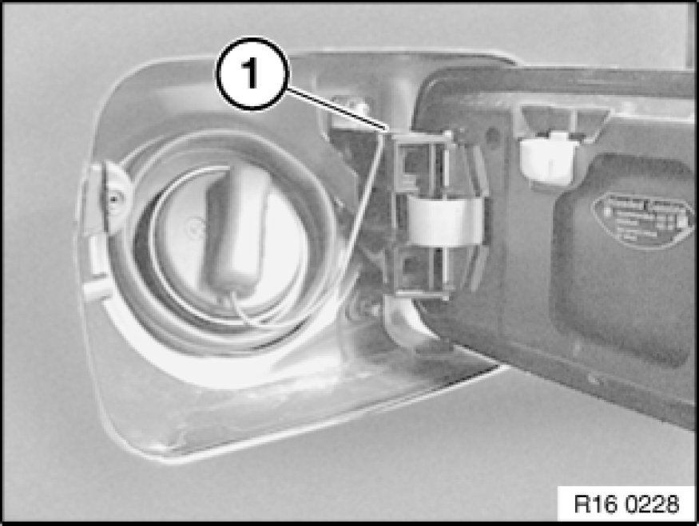
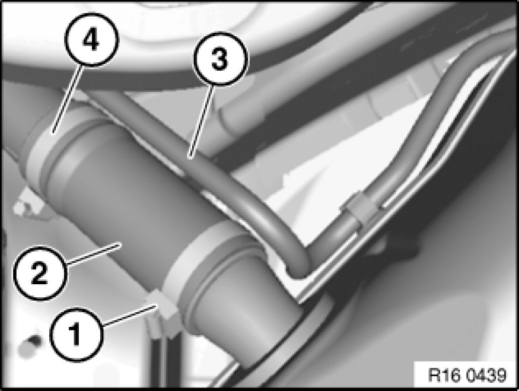
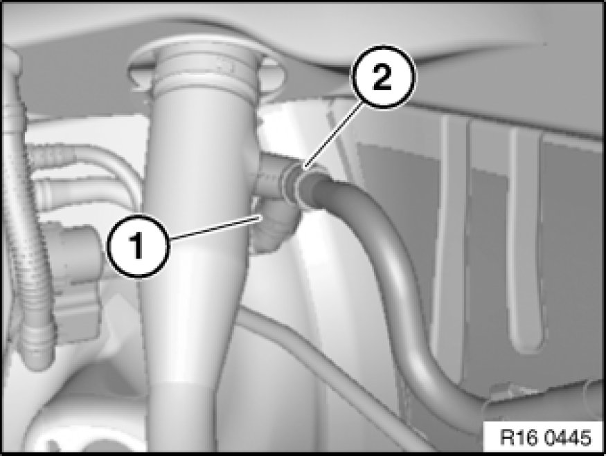
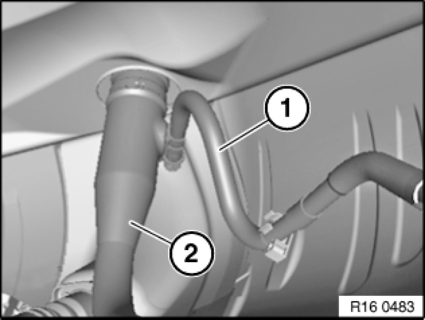
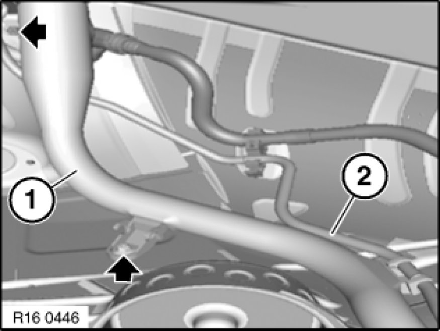
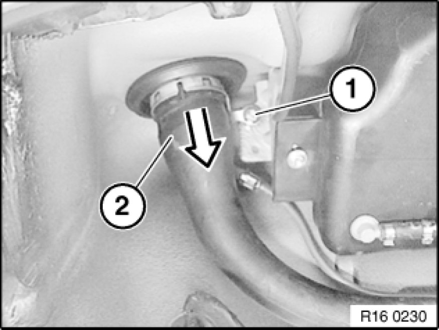

Removing and Installing/Replacing Fuel Filler Pipe
16 11 060 - Removing and installing or replacing fuel filler pipe
Recycling
Fuel escapes when fuel lines are detached. Have a suitable collecting container ready.
Catch and dispose of escaping fuel.
Observe country-specific waste-disposal regulations.
Important!
Ensure adequate ventilation in the place of work!
Avoid skin contact (wear gloves)!
Before starting the engine for the first time:
- Fill fuel tank with at least 5 liters of fuel.
- Check ground connection at fuel filler neck to body for continuity. If necessary, clean contact surface between body and fuel filler pipe screw connection.

Necessary preliminary tasks:
- Remove rear right wheel arch trim Service and Repair
- Draw off fuel from fuel tank Procedures

Unhook retaining strap (1) from tank flap.
Open cap and set to one side.

Unfasten hose clip (4).
Installation:
Replace hose clip.
Tightening torque 16 12 10AZ 16 12 Fuel Delivery.
1 = Hose clamp
2 = Filler hose
3 = Vent line

Note:
With petrol/gasoline engine only!
Detach vent line (1) and (2) from fuel filler pipe.

Note:
With diesel engine only!
Unclip vent line (1) from holder on fuel filler pipe (2).

Unscrew nuts.
Tightening torque 16 12 11AZ 16 12 Fuel Delivery.
Unclip vent line (2) from holder on fuel filler pipe (1).

Slacken nut (1).
Tightening torque, 16 12 16AZ 16 12 Fuel Delivery.
Withdraw fuel filler pipe (2) completely out of rubber gaiter at wheel arch.
Installation:
Make sure rubber gaiter is correctly seated.

Installation:
Clean contact surface on body and grounding lead on fuel filler pipe.
Ground connection must be guaranteed.